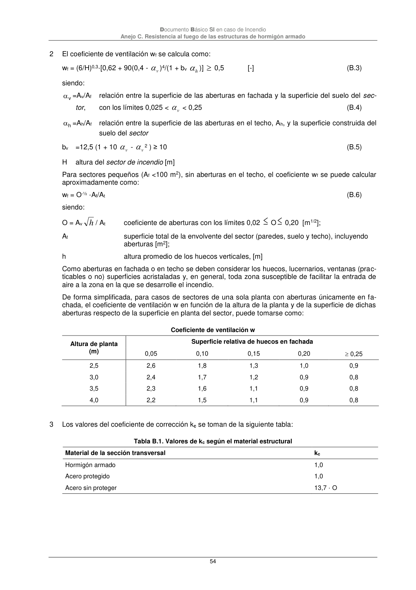

DB-SI Seguridad en caso de incendio · edición 2025-03-04 · capa oficial
Documento DB-SI-oficial · SHA-256 del PDF 0a2e78cd62471d9cc5cfe2efbc6aa39fdbad73c124aea7b039f9de96c141e105
Copia fiel del PDF fuente · Fuente oficial
Ficha de la disposición en la fuente oficial
Formatos: JSON del segmento · Markdown
coeficiente de aberturas con los límites 0,02 O 0,20 [m1/2]; At superficie total de la envolvente del sector (paredes, suelo y techo), incluyendo aberturas [m2]; h altura promedio de los huecos verticales, [m] Como aberturas en fachada o en techo se deben considerar los huecos, lucernarios, ventanas (prac- ticables o no) superficies acristaladas y, en general, toda zona susceptible de facilitar la entrada de aire a la zona en la que se desarrolle el incendio. De forma simplificada, para casos de sectores de una sola planta con aberturas únicamente en fa- chada, el coeficiente de ventilación w en función de la altura de la planta y de la superficie de dichas aberturas respecto de la superficie en planta del sector, puede tomarse como: Coeficiente de ventilación w Altura de planta (m) Superficie relativa de huecos en fachada 0,05 0,10 0,15 0,20 0,25 2,5 2,6 1,8 1,3 1,0 0,9 3,0 2,4 1,7 1,2 0,9 0,8 3,5 2,3 1,6 1,1 0,9 0,8 4,0 2,2 1,5 1,1 0,9 0,8 3 Los valores del coeficiente de corrección kc se toman de la siguiente tabla: Tabla B.1. Valores de kc según el material estructural Material de la sección transversal kc Hormigón armado 1,0 Acero protegido 1,0 Acero sin proteger 13,7 · O Documento Básico SI en caso de Incendio Anejo C. Resistencia al fuego de las estructuras de hormigón armado 55
